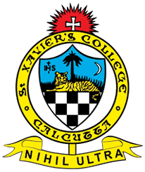

Subhasish Basak
Academics & Courses
Academic Qualifications
Université Paris-Saclay
PhD, Mathématique et Informatique
Gif-sur-yvette, France
2021 - present
Technologies Learned
- Just getting started with EMACS!
Chennai Mathematical Institute, India
Master's of Science, Data Science
Chennai, India
2018 - 2020
Relevant Coursework
- Probability & Statistics with R
- Programming & Data Structures with Python
- Discrete Mathematics & Analysis
- RDBMS, SQL & Visualization
- Design & Analysis of Algorithms
- Numerical Linear Algebra & application
- Data Mining & Machine Learning
- Big Data with Hadoop & distributed computing
- Applied Machine Learning I-II
- Information Retrieval
- Text Analysis & Natural Language Processing
- Advanced Machine Learning (Dl & RL)
- Bayesian Data Analysis
- Computer vision : Image processing
- Mathematical Finance
CGPA : 9.29
St. Xavier's College (Autonomous), Kolkata
Bachelor's of Science, Statistics
Kolkata, India
2015 - 2018
Relevant Coursework

- Descriptive Statistics I-III
- Probability Theory I-III
- Sampling Theory
- Statistical Inference I-III
- Multivariate Analysis
- Non-parametric Inference
- Linear Statistical Models
- Statistical Quality Control
- Analysis & Algebra I-III
- Time Series Analysis
- Econometrics
- Mathematical Economics
- Macro & Micro Economics
- Population Statistics
- Data Analysis using R & MINITAB
CGPA : 8.67